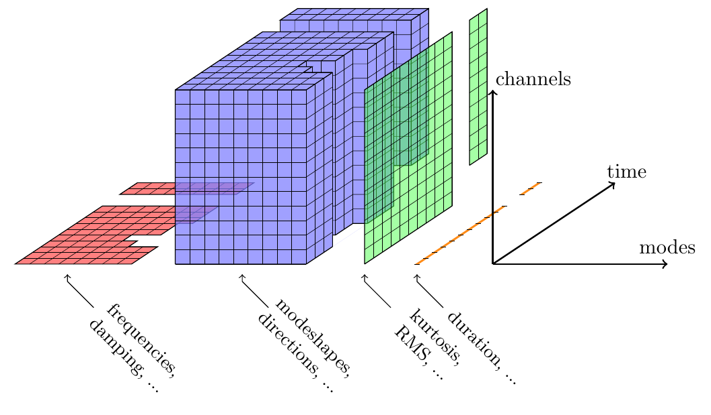
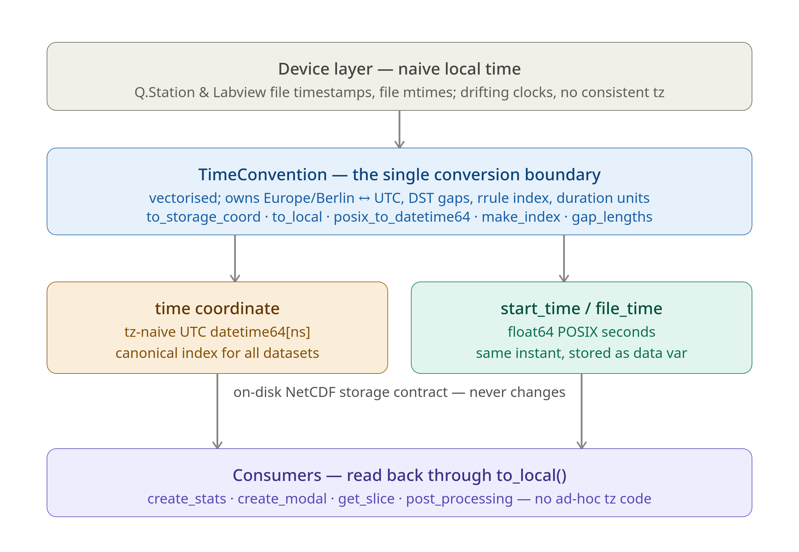
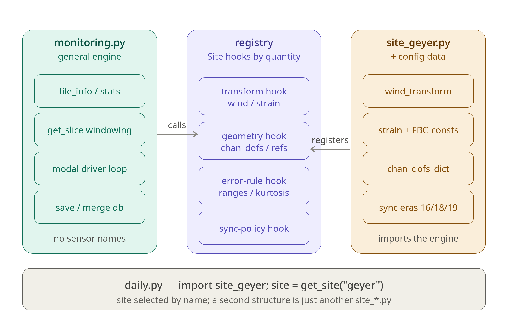

Architecture#
This page explains three design decisions that underpin the monitoring pipeline: the xarray result database schema, the timestamp handling convention, and the engine / site separation. Each section is anchored by a diagram and goes one level deeper than the overview in pyOMA’s continuous monitoring page.
The xarray result database#
{kind=link}

Structure of the xarray result database — three sparse named dimensions (time, modes, channels). Red slabs represent the file-info and statistics databases; blue slabs represent the modal-results database. (After Marwitz & Zabel, ISMA 2018.)#
The pipeline maintains three families of NetCDF files, all managed through xarray:
File pattern |
Engine |
Contents |
|---|---|---|
|
NETCDF4 |
One row per raw file: |
|
NETCDF4 |
One row per fixed-duration window: channel statistics over the preprocessed, band-limited slice. |
|
h5netcdf (complex array support) |
One row per window: identified frequencies, damping ratios, mode
shapes, uncertainty estimates ( |
All three databases share the same three-dimensional structure:
time — UTC-naive
datetime64[ns]; gaps arise from system downtime or discarded quality-flagged windows.modes — integer index; modes not identified in a given window are simply absent (the
modescoordinate is sparse across time).channels — string channel names; sensors added or replaced over the years introduce gaps in mode-shape data.
The sparse structure is a deliberate choice. xr.Dataset.combine_first
fills only the missing entries from a new dataset, preserving existing
values on overlap — this is the merge primitive used throughout
monitoring.save_ds. The pattern:
current_ds = current_ds.combine_first(new_ds)
means “fill gaps in current_ds with values from new_ds; on
conflict, keep current_ds values.” This is the opposite precedence from
xr.merge, which raises on conflicts.
File-per-worker write pattern. When multiple workers run in parallel,
each writes to its own private file
modal_<quantity>.<pid>.nc (a POSIX-unique name) and only
acquires the MultiLock for the final merge step into
the master modal_<quantity>.nc. This keeps lock contention
minimal: the expensive per-window computation happens without any lock held.
Why xarray / NetCDF? Plain NumPy arrays require the caller to maintain separate index arrays; Pandas DataFrames handle 2-D data well but become unwieldy for ragged 3-D structures (time × modes × channels). xarray coordinates carry their own labels, support boolean and slice selection by timestamp, and the NetCDF format is self-describing and directly readable by MATLAB, R, and Julia — a requirement for long-term archival of multi-year monitoring data.
Timestamp handling#
{kind=link}

Timestamp handling in pyOMA-Monitoring. Every device-local naive time
passes through a single conversion boundary (TimeConvention) before
it is written to disk. Two pinned bugs (unit hazard, NaT sentinel) are
documented in tests/test_time_handling.py.#
The problem. Raw data files carry timestamps in device-local naive
time (the Q.Station controller clock runs in Europe/Berlin but stores
no timezone information; the FBG interrogator uses filesystem modification
time via tzlocal). DST transitions in Europe/Berlin mean that the
same naive hour string can refer to two different UTC instants in autumn,
and one hour entirely vanishes in spring. A monitoring system accumulating
data since 2015 has crossed many such transitions.
Single conversion boundary. time_convention.TimeConvention
(singleton TC) owns all Berlin↔UTC/DST logic. No timezone conversion
occurs anywhere else in the codebase:
from time_convention import TC
# Annotate a naive local datetime as Berlin-aware, then convert to UTC-naive
utc_naive = TC.to_storage_coord(aware_start_time)
# → pd.Timestamp(aware).tz_convert('UTC').tz_localize(None).to_datetime64()
# Recover for display / slicing
local_ts = TC.to_local(stored_utc_naive)
# → pd.Timestamp(stored).tz_localize('Europe/Berlin', nonexistent='NaT')
Dual on-disk storage contract. Every result database stores the same
instant in two encodings, both written once per row by
monitoring.create_file_info:
timecoordinate — tz-naive UTCdatetime64[ns]; used as the xarray index for all merges and selections.start_time/file_timevariables — float64 POSIX seconds; used for gap-length arithmetic and recovery via.astype('datetime64[s]').
The two encodings carry the same information, and tests/test_time_handling.py
verifies the round-trip fidelity.
DST gap handling. TC.to_local passes nonexistent='NaT' to
tz_localize, so timestamps in the spring-forward gap (02:00–02:59
Europe/Berlin on the last Sunday in March) map to NaT rather than
raising. create_stats and create_modal_results skip NaT
timestamps with a pd.isnull guard. TC.is_near_dst_transition
provides a wider ±3-hour exclusion zone used during file ingestion to avoid
mis-stamped files recorded during the controller clock adjustment.
Two historical foot-guns, pinned as regression tests.
Bug 1 — ``’us’`` vs ``’s’`` duration unit. In several xarray
arithmetic expressions across the codebase, the float duration column
(stored in seconds) is multiplied by np.timedelta64(1, 's') to recover
a timedelta64. An earlier version used 'us' (microseconds),
making duration=3600 add 3.6 ms instead of 1 hour. The correct pattern
is pinned in TestXarrayTimeArithmetic and TestTimedeltaUnit.
Bug 2 — NaT → int64 sentinel. TimeConvention.gap_lengths shifts a
datetime64 DataArray by one position with .shift(time=-1), which
fills the last element with NaT. Converting NaT directly to
int64 yields np.iinfo(np.int64).min ≈ −9.2×10¹⁸, which then
propagates as an enormous negative gap length. The fix masks elements
equal to INT64_MIN to np.nan before scaling. Pinned in
TestNatSentinel and TestNatInt64.
The entire set of library contracts and conversion chains is encoded in
tests/test_time_handling.py as the executable specification. When
numpy, pandas, or xarray is upgraded, a failing test there is an explicit
signal to audit the corresponding code path.
Engine / site design#
{kind=link}

Engine / site interaction. daily.py imports the site module, which
registers its callbacks into a process-level _SITES registry.
The engine dispatches through that registry; it never imports the site
directly. A second monitored structure is just another site_*.py.#
The dependency direction is the key invariant.
The engine (monitoring.py) is completely site-agnostic. It knows
nothing about tower geometry, FBG calibration coefficients, or Gantner
filename patterns. All site-specific knowledge lives in a site module
(site_tower.py for the tower; site_example.py is a public template
for new deployments). The dependency arrow points inward:
the site module imports the engine (lazily, inside functions, to avoid
circular imports at load time) — the engine never imports the site.
Registration. Each site module calls
monitoring.register_site(site) and monitoring.set_active_site(site)
at import time. daily.py selects the active site simply by importing
the correct module:
import site_tower # registers and activates on import
After that, every engine function dispatches through the process-level
_active_site reference.
The Site dataclass is the contract between engine and site.
It carries eight callable fields (hooks) and twelve configuration fields
(paths, channel lists, etc.) — see Writing a Site Module for the full
reference. The engine calls hooks like this (condensed from
monitoring.get_slice_corrected):
site = _active_site
if site is not None:
transform = site.transforms.get(quantity)
if transform is not None:
data_slice = transform(*data_slice, quantity=quantity,
start_time_local=start_time,
duration=duration, **kwargs)
Graceful failure. If no site is registered (_active_site is None),
engine functions fall back to safe defaults (no transforms, arithmetic mean
for all channels, start_time returned unchanged from sync_policy).
A RuntimeError is raised only when a hook is truly required and absent
— for example, when modal analysis is requested but no setup_prep has
been registered for the quantity.
Adding a second structure. Copy site_example.py, rename it
site_newstructure.py, implement the stubs, and import it. Both sites
can coexist in _SITES; set_active_site selects which one the engine
uses. The engine code is unchanged.
Public vs private. The engine (monitoring.py,
time_convention.py, config.py, MultiLock.py,
site_example.py) is suitable for public distribution. The concrete
site module (site_tower.py) encodes site-specific geometry, calibration
constants, and synchronisation-era logic that is not transferable to other
structures, and may remain private. See Configuration Guide for the
complete guide to writing and wiring a new site module.